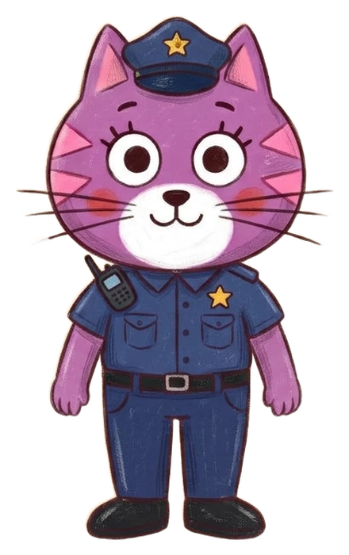

장면 1 · 수리점 앞
테리 경관의 의뢰
사건을 열면 테리 경관과 시작한다.
장소 그림은 아직 없음 (3:4로 새로 그림)

테리 경관
Detective, I need your help.
탐정, 네 도움이 필요해.
t0 · 빈칸 3칸
What happened?
무슨 일이 있었어?
A blue van hit Victor and drove away. We found the van here. It belongs to Evan and Milo. They're twins.파란 밴이 빅터를 치고 달아났어. 여기서 그 밴을 찾았어. 에반과 마일로의 밴이야. 둘은 쌍둥이야.
노트 · A blue [van] [hit] Victor. / Evan and Milo are [twins].보기: car · van · twins · hit · hid · friends
열림: 면담실의 에반과 마일로t1 · 빈칸 2칸
Did anyone see it?
목격자가 있어?
Yes. Iris saw it. She is still on the road. Victor is in the hospital now.응. 아이리스가 봤어. 아직 그 길에 있어. 빅터는 지금 병원에 있어.
노트 · Iris is still on the [road]. / Victor is in the [hospital].보기: road · hotel · school · house · roof · hospital
열림: 아이리스(사고 현장), 빅터(병실)t2 · 빈칸 2칸
Do the twins have an alibi?
쌍둥이에게 알리바이가 있어?
They both say, "I was with Ada in the workshop. My brother went out."둘 다 “나는 에이다와 수리점에 있었어. 형제가 나갔어.”라고 해.
노트 · Each twin says he was with Ada in the [workshop], and his brother [went out].보기: workshop · woke up · came in · hospital · bookshop · went out
열림: 에이다(수리점)다음: 아이리스 · 빅터 · 에이다 · 두 형제를 아무 순서로나 만난다.